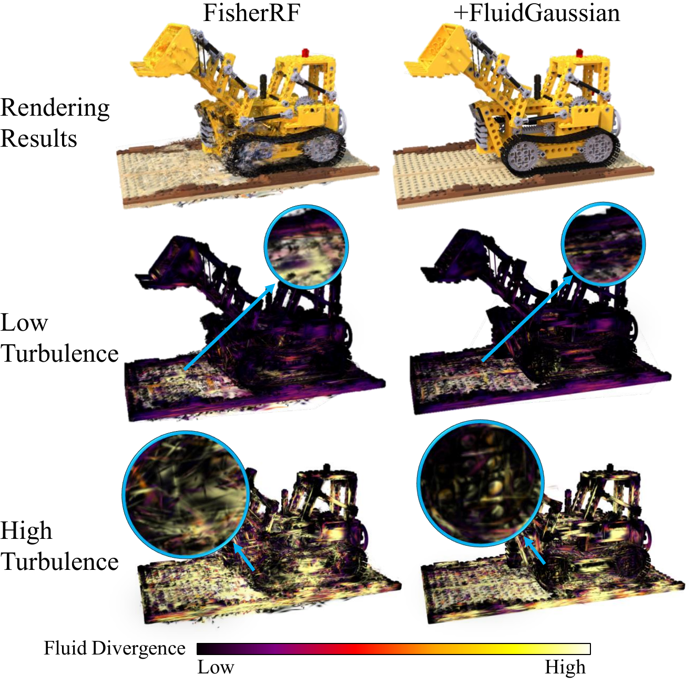
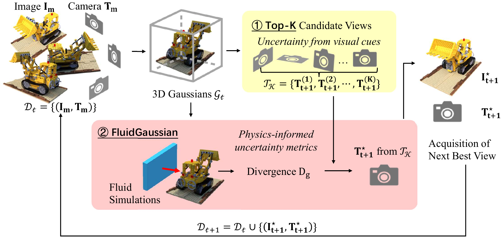
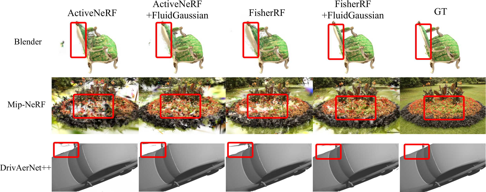

When only visual fidelity is optimized (left), reconstructions may look correct visually and yet fail functionally: fluid simulation exhibits excessive velocity-field divergence, worsening from low to high turbulence. With FluidGaussian (right), both visual fidelity and simulation fidelity are better preserved.
Real objects that inhabit the physical world follow physical laws and thus behave plausibly during interaction with other physical objects. However, current methods that perform 3D reconstructions of real-world scenes from multi-view 2D images optimize primarily for visual fidelity, overlooking body contacts and couplings, conflating function-critical regions (e.g., aerodynamic or hydrodynamic surfaces) with ornamentation, and reconstructing structures suboptimally, even when physical regularizers are added.
We propose FluidGaussian, a plug-and-play method that tightly couples geometry reconstruction with ubiquitous fluid-structure interactions to assess surface quality at high granularity. We define a simulation-based uncertainty metric induced by fluid simulations and integrate it with active learning to prioritize views that improve both visual and physical fidelity.
In an empirical evaluation on NeRF Synthetic (Blender), Mip-NeRF 360, and DrivAerNet++, FluidGaussian yields up to +8.6% visual PSNR and −62.3% velocity divergence during fluid simulations.

Overview of FluidGaussian. Physics-awareness is introduced into 3D reconstruction via two steps: (1) a vision-based NBV method proposes K candidate camera poses; (2) a physics-informed uncertainty score derived from fluid-structure simulations re-ranks the candidates and selects the best next view.

Visualization on Blender, MipNeRF360, and DrivAerNet++. Columns from left to right: ActiveNeRF, ActiveNeRF + FluidGaussian, FisherRF, FisherRF + FluidGaussian, Ground Truth.
@inproceedings{liu2026fluidgaussian,
title = {FluidGaussian: Propagating Simulation-Based Uncertainty
Toward Functionally-Intelligent 3D Reconstruction},
author = {Liu, Yuqiu and Song, Jialin and Ramirez de Chanlatte, Marissa
and Chowdhury, Rochishnu and Desai, Rushil Paresh
and Chen, Wuyang and Martin, Daniel and Mahoney, Michael},
booktitle = {Proceedings of the IEEE/CVF Conference on Computer Vision
and Pattern Recognition (CVPR)},
year = {2026}
}